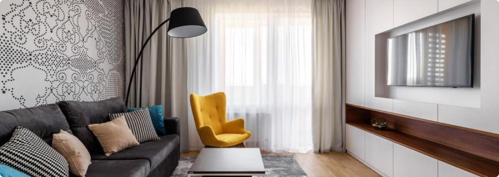

Як покращити якість сну?
Сон – основна складова здорового життя. Дорослі мають регулярно спати 7 або більше годин на добу. Декому, зокрема молодим людям та людям із хронічними захворюваннями, необхідно навіть більше – 9 годин сну на добу.
Лише невеликій кількості людей достатньо спати менше ніж 6 годин на добу. Це зумовлено генетичними факторами.
Ваша поведінка протягом дня, а особливо перед сном, впливає на якість сну. Навіть кілька незначних коригувань в деяких випадках можуть докорінно змінити ситуацію.
Кілька корисних звичок, які допоможуть вам поліпшити сон:
- Дотримуйтесь режиму сну. Лягайте спати та прокидайтесь в один і той самий час. Навіть на вихідних.
- Створіть заспокійливу атмосферу. Тиха, темна, заспокійлива атмосфера та комфортна прохолодна температура в спальні сприятимуть сну. Увечері не вмикайте яскраве світло.
- Приберіть девайси. Приберіть електронні пристрої, зокрема - телевізори, комп’ютери, смартфони зі спальні або принаймні вимикайте їх за 30 хвилин до сну.
- Стежте за раціоном. Уникайте кофеїну (протягом 6 годин перед сном), алкоголю (протягом 4 годин перед сном) та великої кількості їжі перед сном. Дотримуйтесь здорового харчування протягом дня.
- Не пийте перед сном. Вгамувати спрагу перед сном можна і треба, однак надмірне пиття може спровокувати проблеми зі сном.
- Не куріть. Не починайте курити або киньте цю шкідливу звичку. У будь-якому випадку не куріть безпосередньо перед сном.
- Тренуйтесь. Фізична активність протягом дня допоможе вам легше заснути вночі.
- Використовуйте ліжко виключно для сну. Не їжте в ліжку, не дивіться телевізор і не працюйте.
- Також не лягайте спати, якщо не почуваєтесь сонним. У разі, якщо ви не можете заснути протягом 20 хвилин, вставайте з ліжка.
- Маєте звичку дрімати вдень? Обмежте цей час 45 хвилинами.
Якщо ж у вас виникли проблеми зі сном – зверніться до лікаря🤗
Живіть здорово і якісно🥰
Як правильно обрати ліжко?
При виборі ліжка в інтернет магазині Вам в першу чергу потрібно вибрати матеріал. Найбільшою популярністю користуються дерев'яні ліжка, виготовлені з вільхи, ясена чи дуба. Такі моделі чудово прикрасять Вашу спальню у квартирі чи приватному будинку. Для орендованих квартир, під здачу, більше підійде ліжко з металу, так як воно просто «не вбивається», а також має дуже демократичну ціну.
Для Вашої зручності ліжко може комплектуватись висувними ящиками або підйомним механізмом. Ящики можуть бути з одного боку ліжка або з двох. Також є моделі, з висувними ящиками спереду. Ліжка з підйомним механізмом, це відмінне рішення, для невеликих кімнат, вони дозволяють заощадити простір і мають велику нішу для зберігання постільної білизни. Всі дерев'яні ліжка комплектуються буковими ламелями. Спальне місце з ламельною основою може витримувати навантаження до 150 кг на одне спальне місце. Відстань між ламелями, у своїй має бути 2,5-3 див.
Оформлення вітальні. Які м'які меблі краще вибрати?
Вітальня – це основна кімната у кожному будинку. Саме вона служить для прийому гостей, проведення часу всією сім'єю та просто для відпочинку у приємній теплій атмосфері. Оформляючи свій будинок та вітальню зокрема, всі намагаються зробити її максимально зручною, комфортною та красивою. Основним та центральним елементом оформлення вітальні, як і будь-якої іншої кімнати, є м'які меблі.
Будь-які меблі для вітальні повинні бути не тільки стильними і красивими, але і функціональними. На таких меблів має бути зручно та приємно відпочивати та приймати гостей. Однак сьогодні існує величезна різноманітність найрізноманітніших м'яких меблів для вітальні, яка підходить для кімнат різних розмірів і форм. На чому варто зупинити свій вибір? Як краще оформити свою вітальню, щоб вам було комфортно, а гості хотіли приходити до вас знову та знову?
На сайті інтернет магазину Кровато представлено велику різноманітність м'яких меблів для вітальні, серед яких кожен зможе вибрати для себе найбільш вдалий варіант. У нас ви знайдете:
- Прямі дивани. Такі дивани вважаються класикою. Вони підходять для віталень будь-яких форм та розмірів. Прямий диван виглядає стильно та лаконічно, на ньому зручно відпочивати, приймати гостей або навіть спати. Прямі дивани можуть стояти біля стіни, так і в центрі кімнати. Багато моделей прямих диванів легко розкладаються, перетворюючись на повноцінне спальне місце. Також більшість диванів мають великі та місткі ніші, які є додатковим місцем для зберігання;
- Кутові дивани Кутові дивани вважаються найзручнішими та комфортнішими. Вони ідеально підійдуть для приємного проведення часу в колі сім'ї або друзів. Кутові дивани в основному використовуються для оформлення великих віталень, так як вони займають багато місця, і для кімнат з невеликою площею просто не підійдуть;
- Тахти. Тахта - це одна з варіацій дивана, але стильніша і мінімалістична. Виглядають тахти дуже незвично і можуть підійти для будь-якого інтер'єру. Також тахти більше ніж звичайні дивани підходять для сну, оскільки в їх основі не пружинні блоки, а дерев'яні ламелі або ортопедичні матраци;
- Крісла. Крісло – це особливий предмет інтер'єру. Сучасні дизайнери не часто використовують його, вважаючи застарілим, проте саме крісла створюють особливий затишок та комфорт у будь-якій кімнаті. Сьогодні існує величезна різноманітність класичних та сучасних моделей крісел, що дозволяє кожному відшукати ідеальне крісло для свого будинку;
- Набір меблів. Комплект м'яких меблів – це відмінне рішення для тих, хто хоче меблювати свою вітальню не лише диваном, а й кріслами. Існують набори з одним або двома кріслами, із прямими або кутовими диванами. Основна перевага будь-якого готового меблевого гарнітура – це те, що предмети меблів у ньому ідеально поєднуються один з одним, і вам не потрібно буде витрачати свій час та сили на їхній підбір.
Підбір м'яких меблів для вітальні – це заняття непросте. Однак при виборі та покупці меблів для своєї вітальні пам'ятайте, що якісні м'які меблі повинні бути не тільки красивими, але й зручними для вас і всіх мешканців вашого будинку.